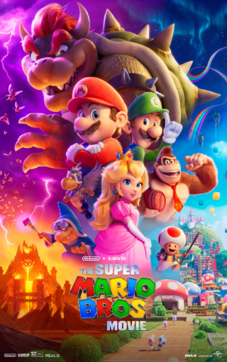

Super Mario Bros. (2023)
Réalisateurs : Aaron Horvath, Michael Jelenic
Résumé court
Mario et Luigi sont transportés dans le Royaume Champignon pour sauver la princesse Peach du roi Bowser.
Critique
Triomphe familial ! Fidèle aux jeux, bourré de clins d'œil et chansons entraînantes. Jack Black en Bowser est hilarant. Record box-office animation.
Synopsis détaillé
Mario et Luigi, plombiers italo-américains de Brooklyn, poursuivent un dinosaure turtle échappé d'un camion et tombent dans un tuyau mystérieux menant au Royaume Champignon. Séparés lors du voyage, Mario atterrit dans une prison gardée par les Goombas tandis que Luigi est capturé par Kamek. Avec l'aide de la princesse Peach et du majordome Toad, Mario entreprend un périple à travers le royaume pour sauver son frère et empêcher Bowser, roi des Koopas, de conquérir le Mushroom Kingdom avec sa Super Étoile.
Voix principales (VOSTFR)
- Chris Pratt : Mario
- Anya Taylor-Joy : Princesse Peach
- Charlie Day : Luigi
- Jack Black : Bowser
Fiche technique
- Genre : Animation, Famille, Comédie
- Réalisateurs : Aaron Horvath, Michael Jelenic
- Producteurs : Chris Meledandri, Shigeru Miyamoto
- Durée : 1h32